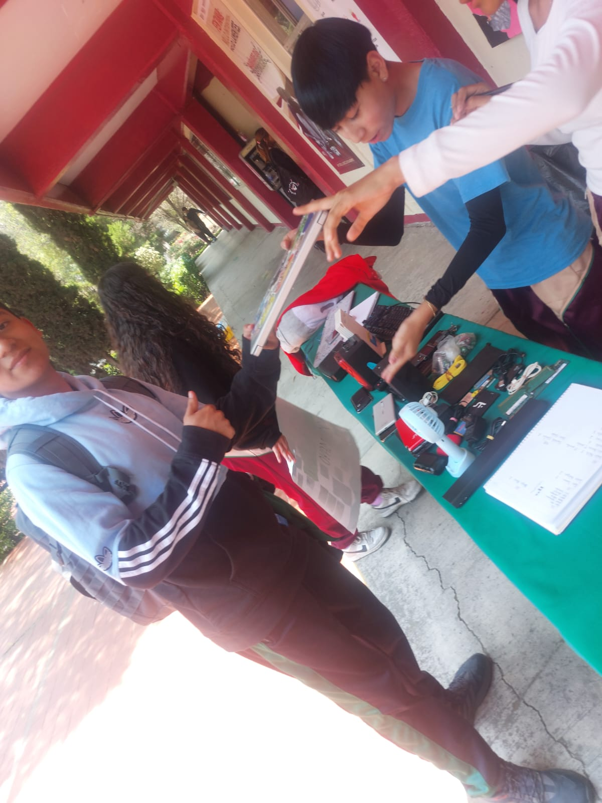

Introducción
En la era digital en la que vivimos, el avance constante de la tecnología ha traído consigo un problema creciente: la basura electrónica.


Cada año, millones de dispositivos electrónicos quedan obsoletos y terminan desechados de forma inadecuada, afectando gravemente al medio ambiente.
Este sitio tiene como objetivo crear conciencia sobre la importancia de aplicar la regla de las 3R: Reducir, Reutilizar y Reciclar, enfocada especialmente en el ámbito de la informática.
A través de prácticas responsables, todos podemos contribuir a minimizar el impacto ambiental que genera el desecho de computadoras, celulares y otros equipos electrónicos.
Aquí aprenderás cómo puedes ser parte del cambio, extendiendo la vida útil de tus dispositivos, dándoles una segunda oportunidad y asegurando su correcta disposición.